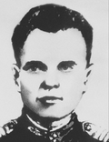

Расковинский Цезарь Сельвесторович
Цезарь Сельвесторович
11 июля 1943 года в районе населенного пункта Мелехово (юго-восточнее поселка городского типа Прохоровка Белгородской области) после жестокого неравного боя гвардии сержант Расковинский остался один у поврежденной пушки. Целясь через визирную трубку прицела, он в упор продолжал расстреливать фашистские танки. За этот день он один уничтожил 6 вражеских танков и удержал занимаемый рубеж. 7 декабря 1943 года командир артиллерийского орудия гвардии сержант Ц. С. Расковинский пал смертью храбрых в бою за село Вершино-Каменка Новгородковского района Кировоградской области Украинской ССР. Похоронен Цезарь Селиверстович на воинском кладбище в посёлке городского типа Новая Прага Александрийского района Кировоградской области Украины.
Биография
Цезарь Селиверстович Расковинский родился в 1915 году в Украине, в селе Выступовичи Житомирской области. Учился в неполной средней школе, после окончания семи классов начал трудиться в местном колхозе сначала трактористом, потом стал помощником механизатора.
Служба в Красной Армии
В 1938 году ушел служить в Красную Армию. Новобранец проявил себя отличником боевой и политической подготовки и после демобилизации поступил во внутренние войска Наркомата внутренних дел СССР и переехал на Вологодчину. Здесь он боролся с хищениями, разоружал бандформирования. Через год после нападения гитлеровской Германии, в августе 1942 года, гвардии сержанта Цезаря Расковинского призвали на фронт. Служил в 96-й отдельной стрелковой бригаде, где стал наводчиком артиллерийского орудия пятой батареи отдельного артиллерийского дивизиона. Участвовал в Сталинградской битве. За проявленное в сражениях мужество был награжден орденом Красной Звезды.
Военные действия на фронтах
Провал под Сталинградом заставил гитлеровцев постараться захватить Курск, на этом участке фронта они сосредоточили крупные воинские формирования. Гвардейский 286 стрелковый полк, в котором служил Цезарь Расковинский, участвовал в операциях на Курской дуге. У Батрацкого урочища расчет 76-миллиметрового орудия Расковинского 7 июля 1943 года уничтожил несколько танков и орудий противника. Но развить успех не удалось, под натиском фашистских частей советские войска вынуждены были отойти к селу Шеино на северо-восток от Белгорода. 11 июля 1943 года у поселка Мелихово, расположенного неподалеку от поселка Прохоровка Белгородской области, где на следующий день началось одно из крупнейших в мировой истории бронетанковых сражений, сержант совершил подвиг. В бою с частями Вермахта личный состав расчета Цезаря Селиверстовича погиб, в живых остался только Расковинский. Он один обслуживал пушку, подносил снаряды и наводил орудие на цель. Артиллерист сумел уничтожить девять танков и три автомашины противника. Затем войска Красной Армии перешли в наступление, 25 июля захватили ключевые точки немецких укреплений и вышли к восточному берегу Северского Донца. После битвы под Курском гвардии сержант Цезарь Расковинский освобождал Белгород, сражался с фашистами под Харьковом. В конце декабря 1943 ему было присвоено звание Героя Советского Союза. Но получить Звезду Героя командир артиллерийского орудия Цезарь Селиверстович не успел: он погиб в бою.